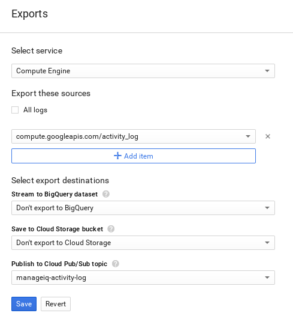

- Google Compute Engine Providers
- Adding Google Compute Engine Providers
- Enabling Google Compute Engine Events
Google Compute Engine Providers
Adding Google Compute Engine Providers
After initial installation and creation of a ManageIQ environment, add a Google Compute Engine provider by following this procedure.
Prerequisites.
To add a Google Compute Engine provider to ManageIQ, you need:
-
A Google Cloud Platform account
-
A Google Compute Engine project with the Google Compute Engine API enabled
-
A service account JSON key for your project
Note:
You can generate a private JSON key for your project in IAM & Admin > Service Accounts in Google Cloud Platform. This key is used to authenticate against your provider.
For additional information, see the Google Cloud Platform documentation.
-
Browse to menu: Compute > Clouds > Providers.
-
Click Configuration, then click
 (Add a New Cloud Provider).
(Add a New Cloud Provider). -
Enter a Name for the provider.
-
From the Type list, select Google Compute Engine.
-
Select your Preferred Region from the list.
-
Enter your Google Compute Engine Project ID for Project.
-
Select the appropriate Zone if you have more than one available. Red Hat recommends creating a new zone for your Google Compute Engine provider.
-
Copy your project’s Service Account JSON key contents to the Service Account JSON field.
-
Click Validate to validate the credentials.
-
Click Add.
Note:
Make sure that NTP synchronization is enabled and working. When clocks are not synchronized, the following error will be raised:
Credential validation was not successful: Authorization failed. Server message: { "error" : "invalid_grant", "error_description" : "Invalid JWT: Token must be a short-lived token and in a reasonable timeframe" }
Enabling Google Compute Engine Events
After adding Google Compute Engine as a provider in ManageIQ, enable events for the provider so that you can monitor the system from ManageIQ.
Events are set up on a per-project basis by using Google Stackdriver logging combined with Google Pub/Sub. Stackdriver logging is a service that aggregates and exposes log events from Google services and applications. Stackdriver exports the log events to Google Pub/Sub, a messaging service. This section describes how to export activity log entries for a Google Compute Engine project so that events are captured in ManageIQ.
-
You must have owner permission on the project you are exporting.
-
The Google Cloud Pub/Sub API must be enabled for your project. To enable the API:
-
In Google Cloud Platform, select your project from the top menu bar.
-
Click to show the Products and Services menu. Click API Manager to go to https://console.cloud.google.com/apis/library/.
-
In the API Manager Overview tab, search for
Pub/Subin the Google APIs search bar and select Google Cloud Pub/Sub API from the results. Click the Enable button. -
If Google Cloud Pub/Sub API is already enabled, the Enable button will not show, and instead Google Cloud Pub/Sub API will be listed under Enabled APIs.
- The Stackdriver logging service must have permission to publish to your project’s Pub/Sub service. To add the required permissions:
-
In Google Cloud Platform, select your project and browse to Products and Services > IAM & Admin > IAM to go to https://console.cloud.google.com/iam-admin/iam/.
-
Assign Logs Configuration Writer permissions to your project:
-
If the
cloud-logs@system.gserviceaccount.comaccount is already listed under Members, ensure Logs Configuration Writer is selected under Role(s). -
If the
cloud-logs@system.gserviceaccount.comaccount is not listed under Members:-
Click Add to add the permissions.
-
In the dialog box, enter
cloud-logs@system.gserviceaccount.comin Members to add the Google APIs service account to the permissions list. -
In the Select a Role dropdown, select Logging > Logs Configuration Writer and click Add.
-
-
Configuring Google Compute Engine to Export Events
After you have completed the steps from itemizedlist_title, set up your Google Compute Engine project to export events to ManageIQ with the following steps:
-
In Google Cloud Platform, click to show the Products and Services menu, and click Logging to go to https://console.cloud.google.com/logs/.
-
Select your project from the top menu bar.
-
Click Exports from the Logging menu.
-
In the Select service list, select Compute Engine.
-
Under Export these sources, click Add item, and select
compute.googleapis.com/activity_logfrom the list. -
Under Select export destinations, click the Publish to Cloud Pub/Sub topic dropdown and click Add new topic…
-
In the Create Cloud Pub/Sub Topic dialog, enter
manageiq-activity-logas the Name. Click Create.
-
Click Save.
When changes occur to Google Compute Engine instances, ManageIQ is now notified and reports these changes as events.
Note:
For additional information about Google Compute Engine, see the Google Cloud Platform documentation:
-
For information on setting up a cloud logging export on Google Cloud Platform, see https://cloud.google.com/logging/docs/export/configure_export.
-
For information on Google Cloud Pub/Sub API operations and costs, see https://cloud.google.com/pubsub/.
Viewing Google Compute Engine Events in ManageIQ
In ManageIQ, view events for your Google Compute Engine project by following these steps:
-
Browse to menu: Compute > Clouds > Providers and select your Google Compute Engine project.
-
Click menu: Monitoring > Timelines on the provider summary page to see an events timeline for the project.